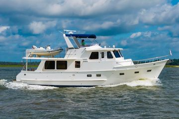

DeFever 40 Offshore Cruiser Offshore Cruiser
1984–1991
The DeFever 40 Offshore Cruiser is an Arthur DeFever cruising design emphasizing substantial displacement, protected running gear and practical accommodations for extended motoring. Its exact hull form and layout vary by model, but the family favors economical passage speeds, robust deck arrangements and machinery intended for long cruising rather than marina-focused performance.

- Length
- 40 ft
- Beam
- 14.5 ft
- Draft
- 3.83 ft
- Hull behaviour
- Semi-Displacement
- Fuel
- Diesel
- Propulsion
- Shaft
- Engine configuration
- Twin Inboard
- Boat family
- Trawler
- Construction
- Fiberglass
Best for
- Couples planning extended coastal or passagemaking use
- Owners who value traditional machinery access and protected running gear
- Buyers comfortable maintaining older heavy cruising yachts
Trade-offs
- Large displacement, tankage and systems increase haul-out and ownership cost
- Older examples can carry extensive exterior teak and aging tanks/systems
- Cruising performance favors efficiency and range over speed
Known concerns
- No model-specific concern has been promoted to B-Scout’s evidence threshold. This does not mean the model has no age-, condition- or hull-specific risks.
Inspection focus
- Verify exact DeFever model identity, builder and production year from hull documentation
- Inspect decks, windows, rail bases and exterior teak for moisture intrusion and prior repairs
- Inspect fuel and water tanks, plumbing, exhaust and engine-room ventilation
- Inspect shafts, cutlass bearings, rudders, keel and running-gear protection
- Review electrical upgrades and generator/charging systems on older examples
Continue researching
Related boat models
40.25 ft · Displacement
40.58 ft · Semi-Displacement
42.17 ft · Semi-Displacement
45 ft · Semi-Displacement
34.33 ft · Displacement
46.83 ft · Semi-Displacement
About this record
B-Scout preserves uncertainty: missing information remains unknown rather than being treated as a negative. Specifications and guidance describe the model record; individual boats can differ by year, equipment, refit and condition.